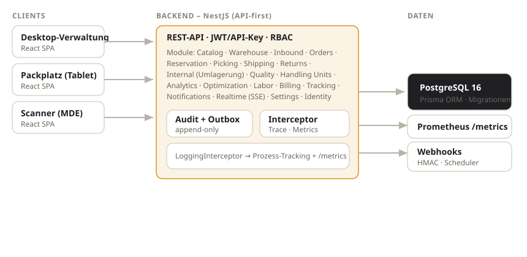

Entwicklerdokumentation
Für Entwickler und Integratoren: Aufbau, Datenmodell, API, Ereignisse, Tests und Betrieb.
Technologie-Stack
| Schicht | Technologie |
|---|---|
| Backend | NestJS 10 (modularer Monolith), TypeScript, Prisma 5 ORM |
| Datenbank | PostgreSQL 16 |
| Frontend | React 18 + Vite + TypeScript, React Router |
| Auth | API-Key (sha256) + JWT (scrypt-Passwort, HS256, ohne native Abhängigkeiten) |
| Tests | Jest (Unit + e2e gegen echte PostgreSQL), Vitest (Frontend) |
| Observability | strukturierte Logs (Trace-ID), prom-client Metriken |
Setup & Betrieb
- Abhängigkeiten:
npm install(Wurzel) undcd frontend && npm install. - Datenbank starten (Docker) und
.envmitDATABASE_URLsetzen. - Migrationen anwenden:
npx prisma migrate deploy, danachnpx prisma generate. - Demodaten:
npx ts-node prisma/seed.ts(legt MandantDEMO, Admin, Lagerplätze, Tags an). - Backend:
npm run build && node dist/main.js(Port 3000). Frontend:cd frontend && npm run dev(Port 5173, proxyt/api→ 3000).
HTTP 200 zurück (nicht 201). In Entwicklung sind
Dev-Header (X-Tenant-Code, X-Actor, X-Permissions) erlaubt, solange
AUTH_ALLOW_DEV_HEADERS nicht false ist.Architektur & Module

Wichtige Querschnitts-Bausteine:
- Inventory ist die einzige Stelle, die Bestand ändert – ausschließlich über eine append-only
StockMovement-Buchung innerhalb einer Transaktion, mit atomarer Negativ-Bestand-Sperre. - Audit + Outbox werden in derselben Transaktion wie die fachliche Änderung geschrieben; der
AuditServicespiegelt jede Aktion zusätzlich in dieProcessEvent-Timeline. - LoggingInterceptor (global) vergibt Trace-IDs, schreibt bei prozessrelevanten Fehlern
ProcessIssue+ Benachrichtigung und erfasst HTTP-Metriken. SSE-Routen werden bewusst umgangen. - Realtime (SSE,
@Global) streamt tenant-gefilterte Events; Produzenten publizieren, ohne das Modul zu importieren.
Datenmodell (Auszug)
| Entität | Zweck | Besonderheiten |
|---|---|---|
Item | Artikelstamm | requiredTags, noAutoTransfer, allowedZoneIds, pickMinResidual |
ItemImage | Produktbilder | Quelle ERP/API/MANUAL, ein Primärbild |
StorageLocation | Lagerplatz | areaKind (PICKING/REPLENISHMENT/OTHER), tags |
Stock | Bestand je (Mandant, SKU, Platz, Charge) | available = quantity − reserved − blocked |
StockMovement | append-only Bewegungsledger | Typen RECEIPT/PUTAWAY/PICK/TRANSFER/ADJUSTMENT/SHIP/RETURN |
TransferOrder | Umlagerung | kind (REPLENISH/DESLOT/TRANSFER), origin, assignee |
ProcessEvent/ProcessIssue/AuditRevision | Tracking/Fehler/Revision | revisionssicher |
Tag | zentraler Tag-Katalog | Scope ITEM/LOCATION/BOTH |
API & Authentifizierung
REST unter dem Präfix /api/v1. Auth via Authorization: Bearer <JWT|ak_...>.
Rechteprüfung über @RequirePermissions(...); das Wildcard * gewährt alles.
# Login (Dev)
curl -X POST /api/v1/auth/login -H 'Content-Type: application/json' \
-d '{"tenantCode":"DEMO","email":"admin@demo.local","password":"admin12345"}'
# Umlagerung anlegen (Regeln greifen: Bereich + Tags)
curl -X POST /api/v1/transfer-orders -H 'Authorization: Bearer <JWT>' \
-H 'Content-Type: application/json' \
-d '{"sku":"SKU-123","sourceLocationId":"...","targetLocationId":"...","quantity":10}'
# Auto-Umlagerung aus Analysen (optional feste Zuweisung)
curl -X POST /api/v1/transfer-orders/auto-generate -H 'Authorization: Bearer <JWT>' \
-H 'Content-Type: application/json' -d '{"mode":"BOTH","assignee":"nachtschicht"}'Eine interaktive OpenAPI/Swagger-Oberfläche wird aus den @ApiOperation-Dekoratoren generiert.
Events & Webhooks
Fachliche Ereignisse werden transaktional in die OutboxEvent-Tabelle geschrieben und
asynchron per HMAC-SHA256-signiertem Webhook zugestellt (mit Versionierung, Retry & Scheduler).
Beispiele: stock.changed, pick_list.completed, return.credit_note,
transfer.auto_generated.
Für UI-Aktualisierung in Echtzeit steht zusätzlich ein SSE-Stream unter
GET /api/v1/realtime/events bereit (Bearer-Auth, tenant-gefiltert).
Tests
- Backend Unit:
npm run test:unit(reine Logik, z. B. Bestandsmathematik, SSCC-Prüfziffer, TTL-Cache). - Backend e2e:
npm run test:e2e(gegen echte PostgreSQL, seriell). Jede Suite baut ihre Daten selbst auf. - Frontend:
cd frontend && npm test(Vitest + Testing Library).
Observability
Strukturierte JSON-Logs mit Trace-ID pro Request. Prometheus-Metriken unter
GET /api/v1/metrics (Prozess-Metriken + http_requests_total und
http_request_duration_seconds, gelabelt nach Methode/Route/Status).